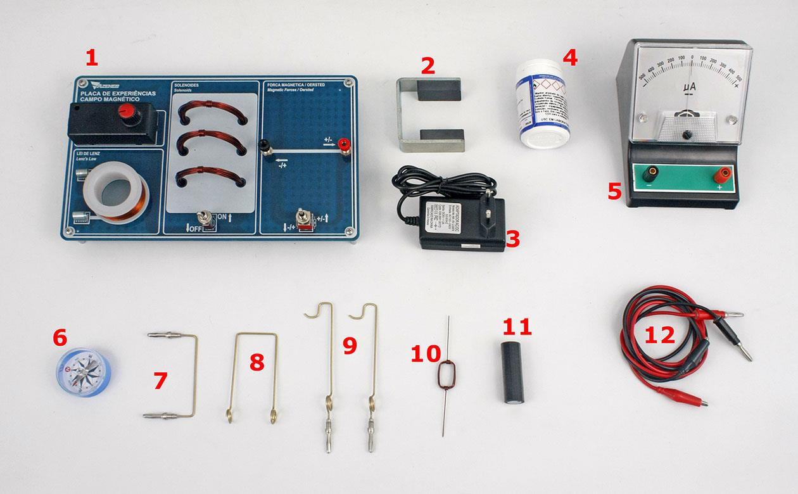
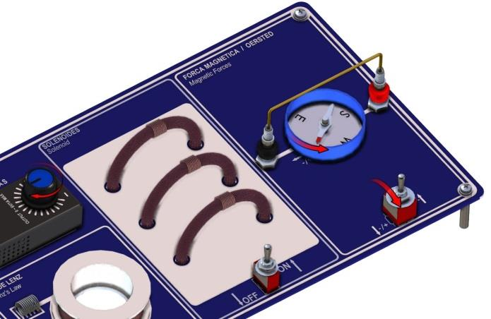
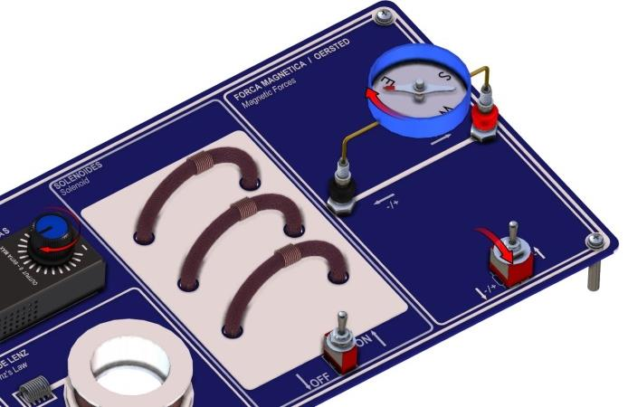

Controle a corrente em um fio com a fonte de bancada, meça a deflexão
de uma bússola colocada sob ele e use a lei da tangente para obter o
campo do fio e o campo magnético da Terra no próprio laboratório.
PRCLFBE
Parte A: campo × corrente
Parte B: campo × distância
fonte de bancada 0–3 A
Montagem
As duas partes usam a mesma montagem. Na Parte A a distância entre o
fio e a agulha fica fixa e a corrente varia; na Parte B a corrente fica
fixa e a bússola é aproximada e afastada do fio.
Objetivos de aprendizagem
Medir a deflexão de uma bússola em função da corrente em um fio e verificar que o campo do fio é proporcional à corrente.
Usar a lei da tangente para converter ângulo em campo e obter, pelo coeficiente angular, a componente horizontal do campo da Terra no laboratório.
Comparar o modelo de fio infinito, \(B=\frac{\mu_0 I}{2\pi r}\), com o campo do acessório real, que tem a forma de um Π.
Visualizar a queda do campo com a distância e a inversão do sentido quando a bússola passa para o outro lado do fio.
Material
Do kit AZEHEB: placa de experimentos (item 1), bússola (item 6), acessório para a experiência de Oersted (item 7) e par de cabos banana/jacaré (item 12).
Do laboratório: fonte de bancada Instrutherm FA-3003 (0–32 V, 0–3 A, com modo de corrente constante e mostrador de corrente).
Régua ou paquímetro, fita adesiva e calços não magnéticos para a Parte B: placas de MDF, acrílico ou papelão, régua de plástico, estojos de CD.
Opcional: multímetro Minipa ET-2704 na escala de 10 A, em série, para conferir a corrente; celular com o aplicativo phyphox para medir o campo da Terra.

Composição do kit. Neste experimento usam-se a placa (1), a bússola
(6), o acessório de Oersted (7) e os cabos banana/jacaré (12). Deixe o
ímã em U (2) e o ímã de neodímio (11) fora da bancada:
eles dominam o campo na bússola. Fonte: manual AZEHEB.
Posição de partida: bússola sob o centro do trecho horizontal, com
fio e agulha paralelos antes de ligar a corrente.
Fonte: manual AZEHEB.

Com corrente, a agulha gira até o ângulo φ em que o campo do fio e o
campo da Terra se equilibram. Fonte: manual AZEHEB.
Grandezas medidas na bancada. O ponto de referência para as alturas é a
superfície da placa; d vai do eixo do fio ao pivô da agulha.
A seta vermelha da agulha marca o polo norte. Esquema do roteiro.
Previsão obrigatória antes de ligar
(1) Com a regra da mão direita, desenhe o sentido do campo do fio no
ponto da agulha e diga para que lado o polo norte vai girar com a
corrente entrando pelo borne vermelho. (2) Meça d e calcule o
ângulo esperado para 1,0 A pelo modelo de fio infinito,
\(\tan\varphi=\frac{\mu_0 I}{2\pi d\,B_{T,h}}\), usando
\(B_{T,h}=17{,}6\ \mu\mathrm{T}\). Registre as duas previsões antes
da primeira medida e não as corrija depois.
Preparação da bancada
Tire da bancada ímãs, celulares, chaves, tesouras e estojos com metal. Coloque a fonte de bancada a pelo menos 50 cm da bússola. Anote se há armário de aço, pé de mesa metálico ou tubulação perto: eles deformam o campo da Terra no local.
Desconecte o adaptador de 6 V da placa e deixe a chave do setor “força magnética/Oersted” na posição central. Encaixe o acessório de Oersted nos bornes vermelho e preto.
Coloque a bússola sobre a placa, sob o centro do trecho horizontal do fio. Gire a placa inteira, não só a bússola, até a agulha ficar paralela ao fio. Dê leves toques na placa para vencer o atrito do pivô e confira de novo.
Meça a geometria e anote na tabela “Medidas da montagem” (aba Dados): o vão entre as pernas, 2a; a altura do eixo do fio sobre a placa, h; a altura do pivô da agulha, zₙ; e, depois de prender os jacarés, a altura deles, z₁. A distância do fio à agulha é \(d=h-z_n\).
Com a fonte desligada, ligue um cabo na saída + (vermelha) e outro na saída − (preta). Prenda o jacaré do + na perna do borne vermelho e o do − na perna do borne preto, o mais baixo possível. Torça os dois cabos um no outro e leve-os para trás da placa, longe da bússola.
Gire o ajuste de corrente da fonte para o mínimo e o de tensão para cerca de 3 V. Ligue a fonte: como o acessório é quase um curto-circuito, ela entra em corrente constante (indicador CC) e o mostrador passa a indicar a corrente. Suba até 0,5 A para conferir o circuito e volte ao mínimo.
Anote a leitura da agulha com a corrente no mínimo. Os jacarés e a fonte podem deslocá-la um ou dois graus; isso não atrapalha, porque o tratamento usa a diferença entre as leituras com corrente direta e invertida.
Parte A — campo em função da corrente, com d fixo
Suba a corrente até 0,20 A. Espere a agulha parar (5–10 s; um toque leve na placa ajuda) e leia o ângulo do polo norte, \(\varphi_+\), com o sinal da convenção do seu diagrama. Leia olhando de cima, para evitar paralaxe.
Repita de 0,20 em 0,20 A até 2,0 A ou até a deflexão passar de 70°, o que vier primeiro. Anote sempre a corrente que o mostrador indica, não a desejada.
Volte a corrente ao mínimo. Inverta o sentido da corrente trocando os pinos banana nas saídas da fonte, sem mexer nos jacarés nem na bússola.
Repita a série com as mesmas correntes e anote \(\varphi_-\). A agulha deve girar para o outro lado.
Volte ao mínimo e confira a leitura de zero. Se ela mudou mais de 2°, a placa ou a bússola se moveu: realinhe e refaça a série.
Para cada corrente, calcule \(\varphi=\frac{\varphi_+-\varphi_-}{2}\). A média elimina o desvio de zero e reduz o efeito de um pequeno desalinhamento entre o fio e o campo da Terra.
Se a graduação da bússola for grossa (5° ou mais),
fotografe de cima com o celular paralelo à placa e meça na foto o
ângulo entre a agulha e o fio de latão, que aparece por cima dela e é a
própria referência de 0°. Ferramentas que servem: ImageJ/Fiji
(ferramenta Angle) ou GeoGebra (inserir imagem e ferramenta Ângulo).

Bússola acima do fio, usada no fim da Parte B: com a mesma corrente,
a deflexão troca de sentido. Fonte: manual AZEHEB.
Parte B — queda do campo com a distância, com I fixo
Escolha a corrente da Parte B, I_B: a que deu entre 40° e 50° na Parte A (em geral 1,0 a 1,5 A). Use a mesma em todas as posições.
Posição 1: bússola apoiada na placa, como na Parte A. Leia \(\varphi_+\), volte ao mínimo, inverta os pinos na fonte e leia \(\varphi_-\).
Posições 2 a 4: coloque calços não magnéticos sob a bússola para aproximá-la do fio, até a caixa quase encostar nele. Meça a espessura s de cada pilha; a distância passa a ser \(d=h-z_n-s\). Em cada altura, realinhe a agulha com o fio, leia \(\varphi_+\) e \(\varphi_-\).
Bússola acima do fio: apoie a bússola sobre o trecho horizontal do acessório, como na figura acima, e repita a leitura. Meça a nova distância, do eixo do fio ao pivô da agulha. Compare o sentido da deflexão com o das posições abaixo do fio.
Se houver tempo, acrescente um calço entre o fio e a bússola de cima para afastá-la mais e repita.
Ao terminar, volte a corrente ao mínimo, desligue a fonte e desconecte os cabos.
A Parte B é de visualização: o objetivo é ver a deflexão cair à medida
que a bússola se afasta e se inverter do outro lado do fio. Com poucas
posições e um fio curto, não espere uma reta perfeita no gráfico de
B × 1/d.
Opcional — campo da Terra medido com o celular
No phyphox, abra “Magnetômetro”. Deite o celular no lugar onde fica a bússola, com a fonte desligada e longe dela.
Anote \(B_x\) e \(B_y\). Gire o celular 180° em torno da vertical, sem levantá-lo, e anote de novo.
A diferença cancela o desvio próprio do sensor: \(B_{T,h}=\frac{1}{2}\sqrt{(B_{x,0}-B_{x,180})^2+(B_{y,0}-B_{y,180})^2}\).
Fundamentos
O modelo ideal é um fio retilíneo muito mais longo que a distância à
bússola. O acessório real tem um trecho reto curto e duas pernas; a
seção 6 mostra quanto isso muda o campo.
1. Do elemento de corrente ao fio completo
A lei de Biot–Savart fornece a contribuição de um elemento do fio. Na
expressão abaixo, r é a separação entre o elemento fonte e o
ponto de observação, e r̂ aponta do elemento para esse ponto.
\[
dB_{\varphi}=
\frac{\mu_0 I}{4\pi}
\frac{a\,dz}{(a^2+z^2)^{3/2}}.
\]
Para um fio ao longo de z, a é a distância perpendicular ao fio; componentes não azimutais se cancelam por pares.
\[
\begin{aligned}
B(a)
&=\frac{\mu_0 I}{4\pi}
\int_{-\infty}^{+\infty}
\frac{a\,dz}{(a^2+z^2)^{3/2}} \\
&=\frac{\mu_0 I}{2\pi a}.
\end{aligned}
\]
A soma sobre todo o fio modifica a dependência radial presente em cada contribuição elementar.
2. Simetria e lei de Ampère
Um fio ideal infinito é invariável por translações ao longo do eixo e
por rotações em torno dele. Portanto, o campo não pode depender da
coordenada longitudinal nem do ângulo azimutal: ele é tangente a
circunferências concêntricas e tem módulo constante em uma
circunferência de raio r. Escolhendo essa circunferência como
caminho amperiano:
A regra da mão direita fixa o sentido: polegar na corrente
convencional, dedos curvados no sentido de B. Trocar o sinal de I ou
atravessar o plano do fio, passando de abaixo para acima, inverte o
campo transversal percebido pela bússola.
O resultado dimensional não prova o fator 2π, mas detecta erros de
unidade e mostra que uma potência radial incorreta exigiria outra
escala de comprimento.
4. Superposição e lei da tangente
Com fio e agulha inicialmente paralelos à componente horizontal do
campo terrestre, \(B_{T,h}\), o campo do fio no ponto da bússola é
horizontal e perpendicular a \(B_{T,h}\). A agulha se orienta pela
soma dos dois campos, formando o ângulo φ com a direção inicial.
A relação exige campos aproximadamente perpendiculares, bússola
nivelada e pequena perturbação magnética local. Se o fio estiver
desalinhado do norte por um ângulo pequeno δ, as deflexões com
corrente direta e invertida deixam de ser simétricas; a média
\(\frac{\varphi_+-\varphi_-}{2}\) cancela esse efeito em primeira
ordem e também o desvio de zero.
5. Onde o modelo deixa de ser ideal
O condutor real tem comprimento e espessura finitos, terminais e
trechos de retorno que também produzem campo. A bússola amostra o
campo numa região, não em um ponto; atrito no pivô, inclinação,
desalinhamento e campos de estruturas metálicas ou da própria fonte
também deslocam o ângulo. A aproximação de fio longo é melhor quando a
distância ao trecho central é pequena comparada ao comprimento desse
trecho, mas ainda grande frente ao raio do condutor. No acessório do
kit, d e o vão 2a têm a mesma ordem de grandeza:
por isso a seção 6 calcula o campo da geometria real.
6. O campo do acessório real, em forma de Π
Para um segmento retilíneo finito, Biot–Savart dá
\(B=\frac{\mu_0 I}{4\pi\rho}\left(\sin\beta_2-\sin\beta_1\right)\),
em que ρ é a distância perpendicular do ponto à reta do segmento e
\(\beta_1\), \(\beta_2\) são os ângulos sob os quais se veem as
extremidades. Com a agulha no plano do Π, centrada entre as pernas e
sob o trecho horizontal, os três segmentos produzem campo horizontal
na mesma direção e no mesmo sentido: as pernas somam
ao trecho reto. O campo por unidade de corrente é um fator geométrico
G, em T/A:
\[
\begin{aligned}
G_{\infty}&=\frac{\mu_0}{2\pi d},\\
G_{\Pi}&=\frac{\mu_0}{4\pi}\left[\frac{2a}{d\sqrt{a^2+d^2}}
+\frac{2}{a}\left(\frac{h-z_n}{\sqrt{a^2+(h-z_n)^2}}
-\frac{z_1-z_n}{\sqrt{a^2+(z_1-z_n)^2}}\right)\right].
\end{aligned}
\]
O primeiro termo de G_Π é o trecho horizontal de comprimento 2a; o segundo, as duas pernas, que conduzem corrente da altura z₁ dos jacarés até h. Os cabos torcidos não entram na conta.
Exemplo com números plausíveis (vão de 8 cm, fio a 3,5 cm da placa,
agulha a 0,8 cm e jacarés na base): \(G_\infty=7{,}4\ \mu\mathrm{T/A}\),
o trecho reto sozinho dá \(6{,}1\ \mu\mathrm{T/A}\) e o Π completo
\(9{,}9\ \mu\mathrm{T/A}\), cerca de 30% acima do fio infinito. Use as
medidas da sua bancada: esse desvio não é erro experimental, é o
modelo que precisa descrever a montagem.
7. O que o ajuste fornece
Juntando a lei da tangente e \(B_{\mathrm{fio}}=G\,I\), a tangente da
deflexão é proporcional à corrente. O coeficiente angular k
do gráfico de tan φ contra I, ajustado pela origem, dá o
campo da Terra no laboratório:
\[
\begin{aligned}
k&=\frac{\sum_i I_i\tan\varphi_i}{\sum_i I_i^2},\\
u_k&=\sqrt{\frac{\sum_i\left(\tan\varphi_i-k\,I_i\right)^2}{(n-1)\sum_i I_i^2}}.
\end{aligned}
\]
Ajuste de uma reta que passa pela origem, com n pontos; u_k é a incerteza do coeficiente angular estimada pela dispersão dos pontos.
Calcule \(B_{T,h}\) com \(G_\infty\) e com \(G_\Pi\) e compare com o
valor de referência: o modelo IGRF-14 dá
\(B_{T,h}\approx 17{,}6\ \mu\mathrm{T}\) para a região de Piracicaba
em novembro de 2026 (inclinação de −39° e declinação de −22°).
Dentro do prédio, estruturas de aço podem mudar esse valor em alguns
microtesla; a medida com o celular é a referência local.
Dados
Preencha somente valores realmente medidos. Os números da primeira
tabela são previsões do modelo, para saber o que esperar, e não
substituem medidas.
Previsão do modelo de fio infinito com B_T,h = 17,6 μT: deflexão φ esperada
d
0,5 A
1,0 A
1,5 A
2,0 A
2,5 A
1 cm
30°
49°
60°
66°
71°
2 cm
16°
30°
40°
49°
55°
3 cm
11°
21°
30°
37°
43°
Medidas da montagem
Grandeza
Valor
Incerteza
Como foi medida
vão entre as pernas, 2a (mm)
altura do eixo do fio, h (mm)
altura do pivô da agulha, zₙ (mm)
altura dos jacarés, z₁ (mm)
distância d = h − zₙ (mm)
leitura de zero antes / depois (°)
B_T,h medido com o celular (μT), se houver
Parte A — d fixo; correntes-alvo de 0,20 em 0,20 A (anote a corrente indicada pela fonte)
I (A)
φ₊ (°)
φ₋ (°)
φ = (φ₊ − φ₋)/2 (°)
tan φ
B_fio = B_T,h tan φ (10⁻⁶ T)
Parte B — I fixo (I_B = ______ A)
Posição
Calço s (mm)
d (mm)
φ₊ (°)
φ₋ (°)
φ (°)
B_fio (10⁻⁶ T)
1 · abaixo, na placa
0
2 · abaixo
3 · abaixo
4 · abaixo
5 · acima do fio
6 · acima, com calço
Tratamento dos dados
Parte A: calcule φ e tan φ para cada corrente. Faça o gráfico de tan φ contra I e ajuste uma reta pela origem; anote \(k\pm u_k\). Use pontos entre cerca de 10° e 70°: perto de 90° a tangente explode e pequenos erros de leitura viram grandes erros.
Com as medidas da montagem, calcule \(G_\infty=\frac{\mu_0}{2\pi d}\) e \(G_\Pi\) (Fundamentos, seção 6).
Obtenha \(B_{T,h}=\frac{G}{k}\) com cada modelo e compare com 17,6 μT (IGRF-14) e com o valor do celular, se medido.
Parte B: calcule \(B_{\mathrm{fio}}=B_{T,h}\tan\varphi\) para cada posição, com o \(B_{T,h}\) que você considerar mais confiável. Faça o gráfico de B contra d e sobreponha as curvas \(G_\infty I_B\) e \(G_\Pi I_B\). Use sinal negativo para as posições acima do fio.
Faça também B contra 1/d com as posições abaixo do fio e descreva a tendência; não conclua a lei radial a partir de poucos pontos.
Controles e desvios
Compare a leitura de zero antes e depois de cada série: se ela
derivou, algo se moveu. Verifique se \(\varphi_+\) e \(-\varphi_-\)
têm valores próximos; uma diferença grande e sistemática indica fio
desalinhado com o norte. Mantenha a fonte e os cabos na mesma posição
em todas as leituras e registre objetos metálicos próximos. Se a
agulha encostar no vidro ou travar, a leitura não vale.
Na primeira expressão, \(u_\varphi\) vai em radianos. A incerteza
relativa da tangente é mínima perto de 45°, por isso a faixa
intermediária de ângulos rende os melhores pontos. A incerteza de
d costuma dominar: um erro de 2 mm em 25 mm já é 8%.
Comprimento finito, pernas e cabos são efeitos sistemáticos; trate-os
pelo modelo do Π, e não somando-os à incerteza.
Relatório
Organize evidência, modelo e limites da conclusão. O arquivo
relatorio.md oferece a mesma estrutura em formato editável.
Ao imprimir, somente esta aba será incluída.
Curso/turma:
Data:
Grupo:
Integrantes:
Objetivo e previsão
Declare o objetivo com suas palavras. Anexe as previsões de sentido
e de ângulo feitas antes de ligar a corrente.
Montagem e geometria
Desenhe o acessório em Π, a bússola, a fonte e os cabos. Indique
2a, h, zₙ, z₁ e d com valores e incertezas.
Dados
Transcreva as tabelas das Partes A e B sem completar lacunas com
estimativas. Inclua uma fotografia da montagem, se autorizada.
Análise
Gráfico de tan φ × I com ajuste pela origem; \(B_{T,h}\) obtido
com \(G_\infty\) e com \(G_\Pi\); gráfico de B × d da Parte B com
as duas curvas de modelo.
Incerteza e limitações
Propague as incertezas de k e de d. Discuta desalinhamento, campo
local, atrito do pivô, geometria finita e posição dos cabos.
Conclusão
Responda com os números do grupo: o campo é proporcional à
corrente? Qual modelo reproduz o campo da Terra de referência? O
que a Parte B mostrou sobre a distância e o sentido?
Tabela de dados do relatório
Parte
I (A)
d (mm)
φ₊ (°)
φ₋ (°)
φ (°)
tan φ
Perguntas conceituais
Por que a troca de abaixo para acima inverte o campo do fio no ponto da bússola?
Por que a média \(\frac{\varphi_+-\varphi_-}{2}\) cancela o desvio de zero e reduz o efeito de um pequeno desalinhamento?
Que simetrias justificam escolher uma circunferência como caminho amperiano, e quais delas o acessório real quebra?
Por que as pernas do Π aumentam o campo na agulha em vez de diminuí-lo?
Por que pontos com deflexão próxima de 90° pioram o ajuste de tan φ × I?
Quais dados seriam necessários para distinguir experimentalmente 1/r de 1/r²?
Checklist de entrega
□ identificação, objetivo e previsões originais;
□ desenho da montagem com 2a, h, zₙ, z₁ e d;
□ tabelas das Partes A e B com unidades e dados realmente obtidos;
□ gráfico tan φ × I com ajuste e o valor de k ± u_k;
□ B_T,h com os dois modelos, comparado com a referência;
□ gráfico B × d da Parte B com as curvas de modelo;
□ análise de incerteza, limitações e conclusão compatível com as evidências.